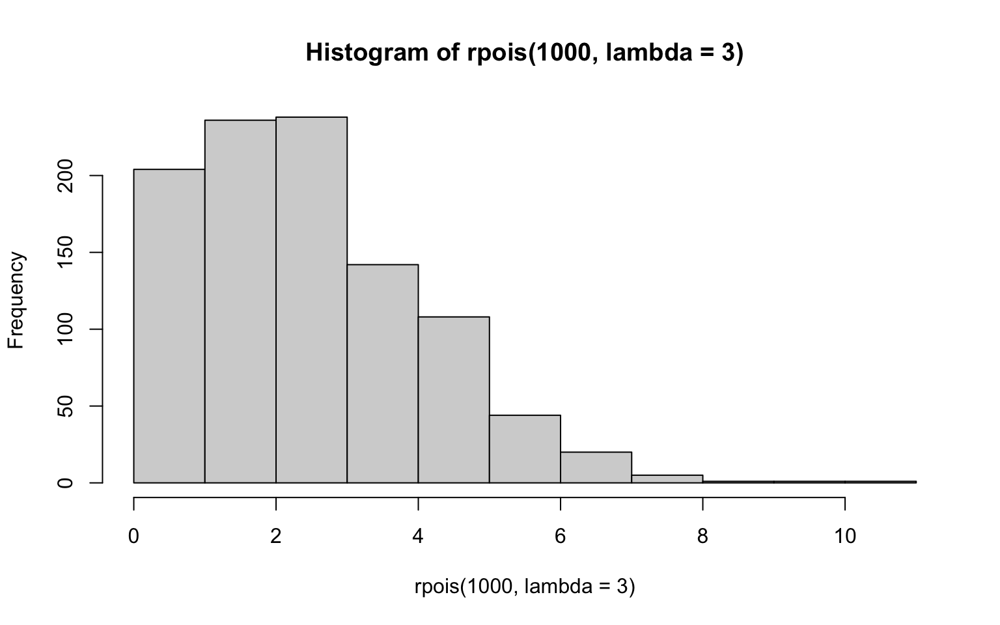

2 How to Use this Book
2.1 Setup
2.1.1 Install booktem
2.1.2 Quarto Options
The file _quarto.yml contains various options that you can set to change the format and look of your book.
2.1.2.1 Project Options
The project key defines the inputs and outputs for the book (quarto reference).
The output-dir key defines the directory where the rendered web files will be saved. This is set to docs in order to be compatible with GitHub Pages, but you can change this if you are working with a different repository that expects the web files to be in a different directory.
The resources key specifies a directory that is copied verbatim to the output directory. This is where you should put, for example, data files that you want to make accessible online (sometimes they don’t automatically copy over when linked).
2.1.2.2 Book Options
The book key defines options that affect the look and function of the book (quarto reference).
book key
book:
title: Book
subtitle: ~
author: ~
doi: ~
license: CC-BY 4.0
description: ~
cover-image: images/logos/logo.png
image: images/logos/logo.png
favicon: images/logos/logo.png
cookie-consent: false
google-analytics: ~
page-navigation: true
search: true
# comments:
# hypothesis:
# theme: clean
# openSidebar: false
downloads: ~
sharing: ~
sidebar:
title: ~
logo: ~
search: true
contents: ~
style: floating
background: ~
foreground: ~
border: true
alignment: left
collapse-level: 3
pinned: true
header: ""
footer: ""
margin-header: ~
page-footer:
left: ~
right: ~
chapters:
- index.qmd
- instructions.qmd
appendices:
- references.qmd2.1.2.3 html Options
The format key defines options for specific formats, such as html or pdf. We’ll only be using html here (quarto reference).
format:html key
format:
html:
theme:
light:
- flatly
- include/light.scss
dark:
- darkly
- include/dark.scss
css:
- https://use.fontawesome.com/releases/v5.13.0/css/all.css
- include/booktem.css
- include/glossary.css
- include/style.css
df-print: kable
code-link: true
code-fold: false
code-line-numbers: true
code-overflow: wrap
code-copy: hover
highlight-style: a11y
mainfont: ~
monofont: ~
include-after-body: [include/script.js]2.1.3 Crossrefs
Section links must start with sec- and look like this: Section 2.1.5.
Figure links must start with fig- and look like this: Figure 2.1.
Table links must start with tbl- and look like this: Table 2.1.
See the quarto documentation for more information.
2.1.4 References
Zotero export - keep updated
2.1.5 Snippets
Snippets in RStudio provide shortcuts to syntax. For example, in an RMarkdown document, type “r” and shift-tab to expand a code chunk.
You can add your own snippets. Under the Tools menu, choose Edit Code Snippets... and paste the following text into the end of the appropriate sections.
2.1.5.1 Markdown
snippet gls
r glossary("${1:term}")
snippet gls2
r glossary("${1:term}", "${2:display}")
snippet h1
# ${1:title} {#sec-${2:ref}}
snippet h2
## ${1:title} {#sec-${2:ref}}
snippet h3
### ${1:title} {#sec-${2:ref}}
snippet h4
#### ${1:title} {#sec-${2:ref}}
snippet h5
##### ${1:title} {#sec-${2:ref}}2.1.6 Customize
2.2 Layout
2.2.1 Conventions
This book will use the following conventions:
- Code:
list(number = 1, letter = "A") - File paths:
data/sales.csv - Menu/interface options:
Tools > Global Options… > Pane Layout - R Packages:
tidyverse - Glossary items: alphaThe threshold chosen in Neyman-Pearson hypothesis testing to distinguish test results that lead to the decision to reject the null hypothesis, or not, based on the desired upper bound of the Type 1 error rate. An alpha level of 5% it most commonly used, but other alpha levels can be used as long as they are determined and preregistered by the researcher before the data is analyzed.
- Citations: Wickham et al. (2022)
- Internal links: Section 2.2.1
- External links: Mastering Shiny
- Mac-specific:
Cmd-Shift-F10 - Windows-specific:
Ctl-Shift-F10
A list of mac and windows keyboard shortcuts.
2.2.2 Figures
It is best practice to set a custom ggplot theme, then each subsequent plot will use that theme. You can put this code in
Start with a built-in theme and then add any tweaks with the theme() function.
2.2.3 Tables
Shorter tables and PDFs print using
| day | time | temp | activ |
|---|---|---|---|
| 346 | 840 | 36.33 | 0 |
| 346 | 850 | 36.34 | 0 |
| 346 | 900 | 36.35 | 0 |
| 346 | 910 | 36.42 | 0 |
| 346 | 920 | 36.55 | 0 |
| 346 | 930 | 36.69 | 0 |
2.2.4 Callout boxes
See the quarto reference for more options.]{.aside}
Note
.callout-note: Informational asides.
Click to expand
colapse = “true”: Expanded!
Tip
.callout-tip: Tips
Warning
.callout-warning: Notes to warn you about something.
Caution
.callout-caution: Notes about things that could cause serious errors.
Important
.callout-important: Notes about things that are important.
2.2.5 Code and Output
2.2.6 Fonts
2.3 Extras
2.3.1 Glossary
Books are set up with lightweight glossary functions from the glossary package.
Edit the file glossary.yml with your glossary terms like this:
alpha: |
The threshold chosen in Neyman-Pearson hypothesis testing to distinguish test results that lead to the decision to reject the null hypothesis, or not, based on the desired upper bound of the Type 1 error rate. An alpha level of 5% it most commonly used, but other alpha levels can be used as long as they are determined and preregistered by the researcher before the data is analyzed.
p-value: |
The probability of the observed data, or more extreme data, if the null hypothesis is true. The lower the p-value, the higher the test statistic, and less likely it is to observe the data if the null hypothesis is true.Look up a term from the glossary file with glossary("alpha"): alphaThe threshold chosen in Neyman-Pearson hypothesis testing to distinguish test results that lead to the decision to reject the null hypothesis, or not, based on the desired upper bound of the Type 1 error rate. An alpha level of 5% it most commonly used, but other alpha levels can be used as long as they are determined and preregistered by the researcher before the data is analyzed.
Display a different value for the term with glossary("alpha", "$\\alpha$"): \(\alpha\)The threshold chosen in Neyman-Pearson hypothesis testing to distinguish test results that lead to the decision to reject the null hypothesis, or not, based on the desired upper bound of the Type 1 error rate. An alpha level of 5% it most commonly used, but other alpha levels can be used as long as they are determined and preregistered by the researcher before the data is analyzed.
Use an inline definition instead of the glossary file with glossary("beta", def = "The second letter of the Greek alphabet"): betaThe second letter of the Greek alphabet
Just show the definition with glossary("p-value", show = "def"): The probability of the observed data, or more extreme data, if the null hypothesis is true. The lower the p-value, the higher the test statistic, and less likely it is to observe the data if the null hypothesis is true.
Show the table of terms defined on this page with glossary_table():
| term | definition |
|---|---|
| alpha | The threshold chosen in Neyman-Pearson hypothesis testing to distinguish test results that lead to the decision to reject the null hypothesis, or not, based on the desired upper bound of the Type 1 error rate. An alpha level of 5% it most commonly used, but other alpha levels can be used as long as they are determined and preregistered by the researcher before the data is analyzed. |
| beta | The second letter of the Greek alphabet |
| p-value | The probability of the observed data, or more extreme data, if the null hypothesis is true. The lower the p-value, the higher the test statistic, and less likely it is to observe the data if the null hypothesis is true. |
2.3.2 FontAwesome
The fontAwesome quarto extension allows you to use the free icons with syntax like:
{{< fa dragon >}}
{{< fa brands github size = 5x title="(github logo)" >}}To install it, just run this code in the Terminal pane of RStudio (not the Console pane).